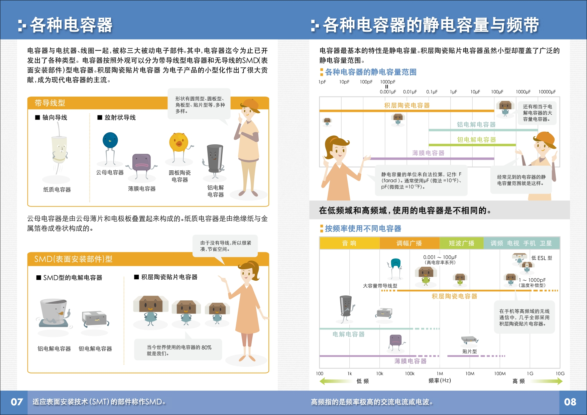
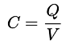
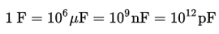
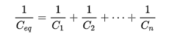
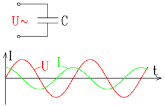
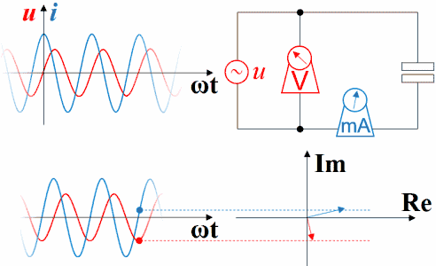
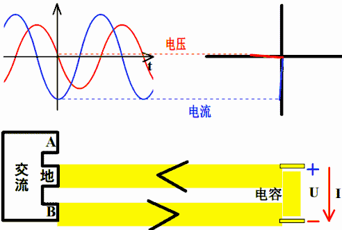
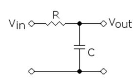

下面用三个篇章解释
# 视频篇
# 漫画篇



图片提取自 TDK 株式会社
# 文字篇
1、电容器与电容
电容器（英文：capacitor，又称为 condenser）是将电能储存在电场中的被动电子元件。电容器的储能特性可以用电容表示。在电路中邻近的导体之间即存在电容，而电容器是为了增加电路中的电容量而加入的电子元件
电容器包括二个电极，二个电极储存的电荷大小相等，符号相反。电极本身是导体，二个电极之间由称为介电质的绝缘体隔开。电极的金属片通常用的是铝片或是铝箔，若用氧化铝来做介质的就是电解电容器。电荷会储存在电极表面，靠近介电质的部分。由于二个电极储存的电荷大小相等，符号相反，因此电容器中始终保持为电中性
2、原理
电容器的电容（C）是测量当电容器两端的电势差或电压（V）为单位值时，储存在电容器电极的电荷量（Q）：

上式的意义是，在一个具有 C 法拉的电容两端跨接 V 伏的电压时，该电容的一个极板上就有 Q 库仑的电荷存储，而另一个极板上也有 -Q 库仑的电荷存储；其电荷量的单位为 -- 库仑（C），则此电容器的电容量单位为 -- 法拉（F）
3、电容的定义式
由于电容器的总电场，在电容器两端会出现电压。电压 V 和电容器一端的绝对电荷量 Q 成正比，而 Q 是流过电容器的电流对时间的积分。其数学式如下：

其中：
I 是流过电容器的电流，单位为安培。
dV /dt 是电压对时间的微分，单位是伏特 / 秒。
C 是电容器件的电容值，单位是法拉。
4、电容单位和转换
电容的单位是法拉，简称 “法”，单位符号为 “F”，是国际单位制导出单位。一般来说，1 法拉算是很大的电容，大多数用于电子电路的电容器，其电容会小于法拉几个数量级
常用的单位有：微法拉（microfarad，μF）、纳法拉（nanofarad，nF）、皮法拉（picofarad，pF）
单位转换：

5、电容种类
・瓷片电容（可以耐高压，通常用作安规电容）
・积层陶瓷电容（其标准化封装，尺寸小，适用于自动化高密度贴片生产）
・铝电解电容（优点：电容量大、额定电压高、便宜；缺点：寿命较短、温度特性不好、ESR 和 ESL 较大）
・钽电容（频率特性及温度特比比铝电解电容要好，但介电吸收及漏电流都较大）
一般地，陶瓷与聚酯薄膜类用于大多数不太重要的电路中；钽电容用于需要较大电容量的场合，而电解质电容则用于电源滤波的场合
6、电容的串联与并联
· 并联的数个电容有相同的电压。其总电容（Ceq）如下：


一般而言，电容并联的目的是增加储存的总能量。电容储存的能量如下：

· 串联的数个电容会流过相同电流，但各个电容的电势差（电压）可能不同，而电容的电压的和会等于总电压，电容串联后的电容值如下：


・在电容并联时，电容电极的有效面积变大，因此电容值增加；而在电容串联时，相当于电容电极的距离变大，因此电容值减小
・电容串联后，电容减小了，但是耐压能力提高了，所以要承受较高的电压，可以把电容串联起来；电容并联后，电容增大了，耐压能力并没有提高，所以在需要大电容时，可以把电容并联起来
7、电容的代换注意
・电容并联时，每个电容所承受的工作电压相等，并等于总电压；因此，如果工作电压不同的几只电容并联，必须把其中最低的工作电压作为并联后的工作电压
・电容串联后，电容的工作电压在电容量相等的条件下，等于每个电容的工作电压之和；故串联后的电容工作电压升高
8、电容选型主要参数
・电容值
・允许误差
・额定电压（一般要求比输入电压高 20%）
9、容性负载电压电流的超前滞后
首先要提醒，相位的概念是针对正弦信号而言的，直流信号、非周期变化信号等都没有相位的概念
由于 Sin [ωt] 在求导或积分后会出现 Sin [ωt ± 90°]，所以对于接上了正弦波的容性负载，通过接上理想的直流电压表、直流电流表，可以观察到波形超前滞后的现象

如果还表现的还不够生动，可以用动态图演示，其用红色表示电压，蓝色表示电流：

电压的变化滞后于电流，电流的变化超前于电压，所以若电容器通入交流的信号，相角为 90 度，亦即电流领先电压 90 度。电压的大小和电流成正比，和频率和电容量 C 的乘积成反比

用不同的颜色描述电压的大小，蓝色 > 黄色 > 红色；用不同的粗细和箭头描述电流的大小和方向，电流最大时电容电场能最小
10、容抗
容抗的概念反映了交流电可以通过电容器这一特性，交流电频率越高，容抗越小，即电容的阻碍作用越小。容抗同样会引起电流与电容两端电压的相位差；当频率等于零，容抗无限大，即直流电不能流过电容器。
容抗可由下面公式计算而来：

在交流电的复数分析中，容抗表示为：

其中
・j 是复数单位
・Xc 是容抗，单位为欧姆
・ω = 2πf 是角速度，单位为 弧度 / 每秒
・f 是频率，单位为赫兹
・C 是电容，单位为法拉
11、电容和频率的关系
・电容值越大，频率点就越低
・频率点和电容的材质有关系
・频率点和温度有关系
所以，通常我们说：电容 “通高阻低”，不能一概而论，要根据实际应用，和电容相关手册
12、电容的 "通交阻直" 分析
・电容器接在交流电路中，由于交流电电压的大小和方向随时间不断变化，致使电容器进行反复充放电，电路中相应不断出现交流电流，使得自由电子通过电路在电容器的两个极板上来回运动，自由电子的相对运动形成电流，因此，交流电流能通过电容器，即通交流；这里所指的交流电流是电容器反复充放电所形成的电流，并非电荷直接通过电容器中的介质。
・电容器接通直流电源时，仅仅在刚接通的短暂时间内发生充电过程，只在这一短暂过程电流流过电容器；此后由于直流电源电压恒定不变，电容器两端电压也恒定不变，电容器与电源负极相连的极板上负电荷占多数，并马上达到电路中各个点的电势都相等，没有电位差，因此电容器中不会有电流流过，相当于电容器把直流电流隔断，所以电容器可以起到隔直流的作用。
根据电容的电抗特性，电容可近似地看成一个依赖频率的电阻元件，因此，所谓的 “通交阻直” 其实更多的是反应频率的效果
13、电容的特性总结
・隔直流通交流，通高频阻低频
・电容两端的电压不能够突变，电流能突变
・大容值电容滤低频噪声，小容值电容滤高频噪声
・电容在充放电过程中并不消耗能量
14、电容器的主要用途
・电源滤波（几乎所有的电源电路中都用到，通过电容以滤除直流电源中不需要的交流成分，使直流电变平滑）
・去耦和旁路（基于的是电容的阻抗随频率升高而降低的原理）拓展一下：去耦电容和旁路电容都是起到抗干扰的作用。对于同一电路来说，旁路电容是把输入信号中的高频噪声作为滤除对象，把前级携带的高频杂波滤除；而去耦电容也称退耦电容，是把输出信号的干扰作为滤除对象。去耦电容用在放大电路中不需要交流的地方，用来消除自激，使放大器稳定工作
・滤波器（低通滤波器、高通滤波器）
・LC 谐振电路（带通滤波、陷波滤波）
・微分电路和积分电路
・电路耦合
15、RC 无源滤波器
・低通滤波器

容许低频信号通过，但减弱（或减少）频率高于截止频率信号通过的滤波器。对于不同滤波器而言，每个频率的信号的减弱程度不同
・高通滤波器

容许高频信号通过、但减弱（或减少）频率低于截止频率信号通过的滤波器。对于不同滤波器而言，每个频率的信号的减弱程度不同
高通、低通滤波器利用电容在频率响应上的特点，将一个电容或电感与一个电阻相配合，产生一个分压器，以将不需要的分量衰减掉，而容许所需的分量通过